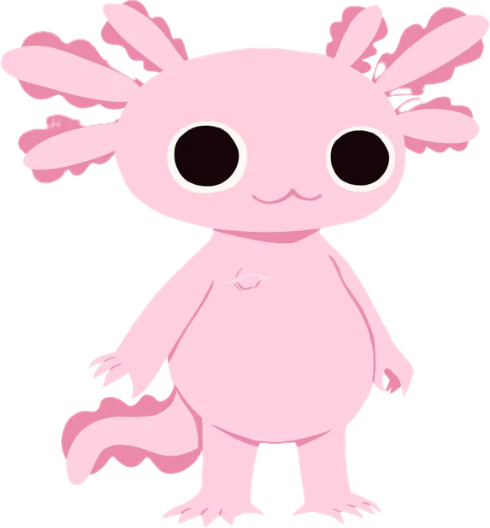
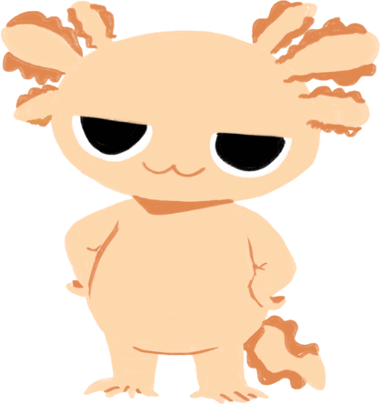
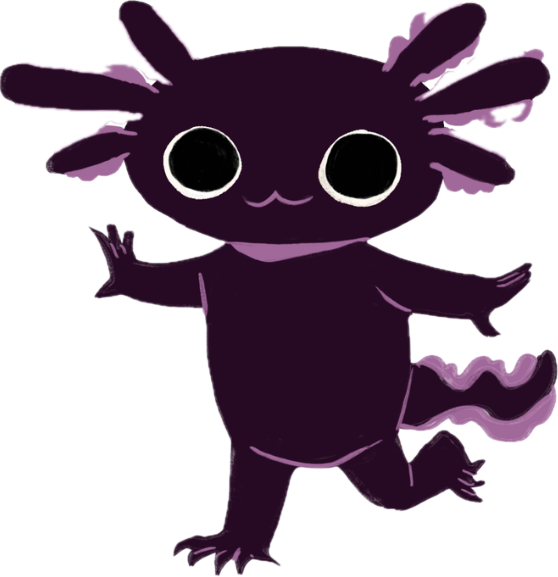

de los casos de cáncer en niños son leucemias a nivel mundial.
Acompañando a pequeños valientes en su tratamiento
Transformando el miedo en valentía a través del juego, la educación y el acompañamiento emocional.
El cáncer infantil: una realidad que necesita atención
de los pacientes pediátricos presentan síntomas de ansiedad o depresión.
Al ingresar al entorno hospitalario, los niños y sus familias enfrentan tecnicismos y procedimientos invasivos en un momento de vulnerabilidad. La falta de recursos didácticos adaptados a su nivel cognitivo genera barreras de comunicación que intensifican el miedo.
"Porque una infancia con cáncer merece seguir siendo una infancia"
Nuestro puente lúdico: educación y empatía
🧸
Peluche terapéutico interactivo
Ajolotes con branquias removibles (que normalizan la caída de cabello), cicatriz de puerto para quimioterapia y jeringa lúdica para simular procedimientos sin dolor.
🎥
Videos educativos validados
Cápsulas audiovisuales dirigidas a cuidadores con explicaciones clínicas en un lenguaje comprensible, respaldadas por especialistas en hematología.
💜
Acompañamiento integral
Herramientas multidisciplinarias diseñadas para reducir la ansiedad hospitalaria y fomentar el apego al tratamiento desde el primer día.
¡Conoce a Ambys y sus amigos!

Ambys
Es muy simpático, alegre y le encanta enseñar a otros. ¡Más valiente de lo que cree!

Sal
Es un poco testarudo y temperamental, pero es profundamente leal a sus amigos.

Amandra
Es dulce y empática. Su naturaleza serena y comprensiva brinda confort en momentos difíciles.
¿Quiénes somos?
En Ambys & Friends creemos que la medicina debe ser más humana, accesible e inclusiva. Trabajamos para que cada paciente pediátrico y su familia cuenten con información confiable, disminuyendo la incertidumbre mediante la empatía y el juego.
Misión
Acompañar y educar a los pacientes pediátricos y sus cuidadores mediante recursos interactivos y juegos de roles que reduzcan la ansiedad y promuevan el apego al tratamiento.
Visión
Transformar el aprendizaje médico en una experiencia cercana y significativa para las familias en Latinoamérica, convirtiendo el acompañamiento en un pilar esencial de la salud infantil.
Validación médica e innovación
Desarrollo Tecnológico
Colaboración con la Subdirección de Investigación y la Secretaría de Innovación (SIDET) de la Facultad de Medicina de la UANL en el diseño de prototipos y plataformas digitales.
Respaldo Clínico
Asesoría del Servicio de Hematología Pediátrica del Hospital Universitario, encabezado por la Dra. med. Laura Villarreal Martínez, para guiones clínicos y pruebas de aceptación.
Reconocimientos
Participación en el 1er Foro de Innovación Tecnológica en Salud (33 Congreso Nacional), semifinalistas en TigerTank 2026 y seleccionados en InnovaFest Monterrey 2026.
¡Ponte en contacto con nosotros!
Haz clic en cualquiera de nuestros canales para comunicarte directamente.
Correo Electrónico
¿Tienes dudas o te interesa colaborar con la iniciativa? Escríbenos.
Enviar correoConoce nuestras dinámicas, infografías y avances del proyecto.
Ir al perfil